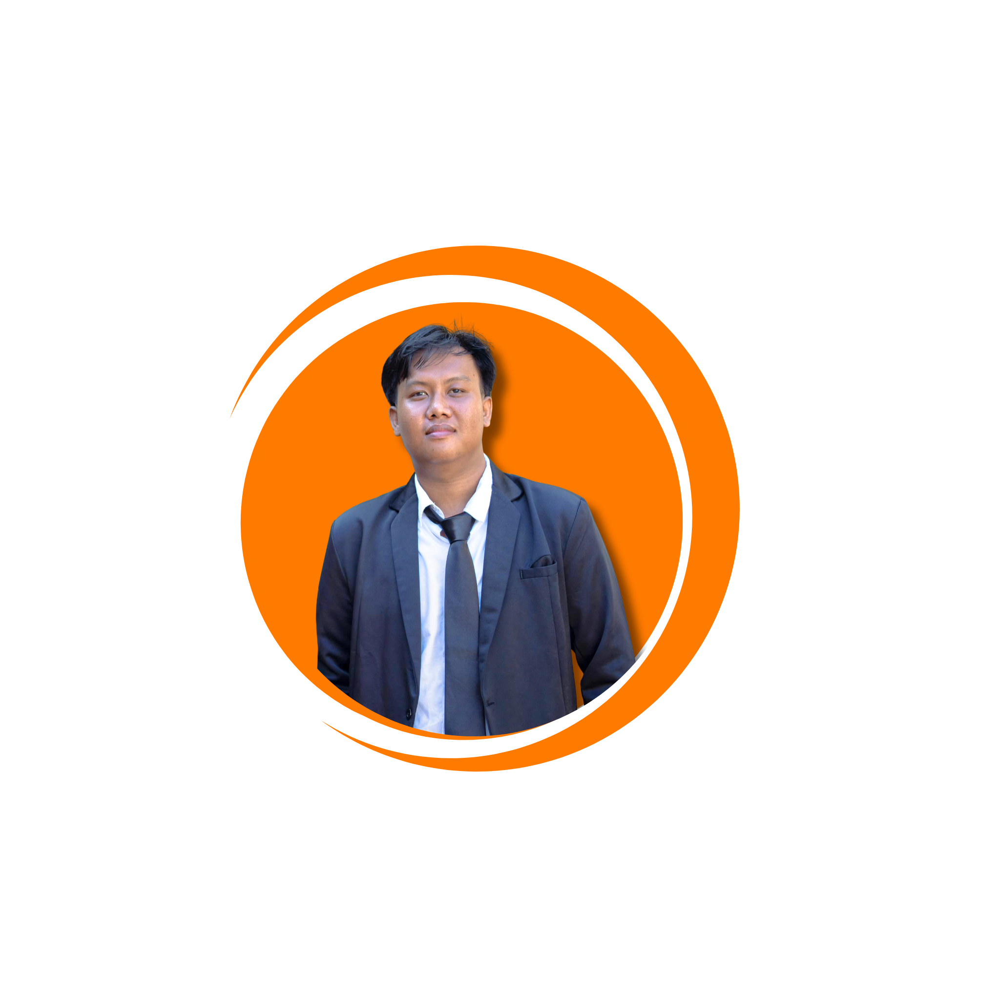
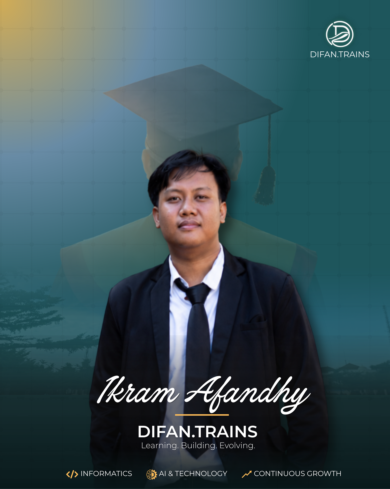

Hi, I'm
Ikram Afandhy, S.Kom.
I'm
An Informatics graduate from Universitas Cokroaminoto Palopo with a strong interest in technology, data management, and digital solutions. Passionate about continuous learning, problem-solving, and contributing to technology-driven industries.
Download CV
About Me

I Build Technology-Driven Solutions
I am an Informatics graduate from Universitas Cokroaminoto Palopo with a strong interest in technology, data management, and information systems. During my academic journey and internship experience, I developed skills in data collection, field monitoring, Microsoft Excel, and web-based system development.
I enjoy learning new things, analyzing problems, and finding practical solutions. I am adaptable, responsible, and comfortable working both independently and as part of a team. I am eager to continue developing my skills and gain professional experience, particularly in the mining industry and other technology-driven sectors.
Resume
Sekolah Menengah Atas
SMAN 5 LuwuHigh school, or SMA 5 Luwu, marked the final stage of my formal education journey. These years were crucial for shaping my academic path and preparing for higher education or career pursuits. At SMA, I encountered more challenging coursework, participated in extracurricular activities, and formed lasting friendships. The support of dedicated teachers and the opportunities provided by the school were instrumental in my personal and academic growth.
Mahasiswa
Universitas Cokroaminoto PalopoI pursued my bachelor's degree in Informatics at the Faculty of Computer Engineering, Universitas Cokroaminoto Palopo. Throughout my studies, I gained knowledge in various areas of information technology, particularly programming, software development, database management, and system analysis. I also developed my skills through academic projects, including building a web-based Decision Support System for selecting tourist destinations in Luwu Regency using the Analytical Hierarchy Process (AHP) method. This experience helped me understand how technology can be applied to address real-world problems and develop practical solutions. I graduated in 2026 with a GPA of 3.87.
Intern - Bidang Ketersediaan dan Distribusi Pangan
Dinas Ketahanan Pangan Kota PalopoDuring my internship at the Palopo City Food Security Office, within the Food Availability and Distribution Division, I participated in various field monitoring activities with the team to monitor food quality, prices, and availability. My responsibilities included inspecting food products at traditional markets and distribution warehouses, as well as participating in monitoring activities in coordination with the Agriculture Office and BULOG. I also collected and processed food price data using Microsoft Excel and developed a data collection form to support the reporting process. Throughout the internship, I participated in approximately five field monitoring activities.
Final Project - Sistem Pendukung Keputusan Pemilihan Tempat Wisata Luwu
Universitas Cokroaminoto PalopoDeveloped a web-based decision support system using PHP and JavaScript. Implemented the Analytical Hierarchy Process (AHP) method to support tourist destination selection, integrated Google Maps API to display tourist location information, and conducted system testing using Black Box Testing and the System Usability Scale (SUS).
Technical Skills
PHP, JavaScript, HTML, CSS, Kotlin, Database Management.Data & Administration
Microsoft Excel, Data Collection, Data Processing, Documentation.Analysis & Operational
System Analysis, Analytical Hierarchy Process, Field Monitoring.Professional Skills
Teamwork, Communication, Problem Solving, Adaptability, Time Management.GenMas Scholarship Recipient
PT Masmindo Dwi Area Beasiswa Mahasiswa BerprestasiCommittee - Gerakan Pangan Murah
Palopo | 4 June 2025 Panitia kegiatan Gerakan Pangan MurahAnti - Bullying Socialization
SDN 95 Bulo | 8 November 2025 Tim sosialisasi dan dokumentasi kegiatanCommunity Service Journal Publication
27 January 2026 Sosialisasi Stop Bullying di SDN 95 BuloBasic Python Programming Training
8 - 10 January 2026 Universitas Cokroaminoto PalopoPortfolio
- All
- Projects
- Experience
- Activities